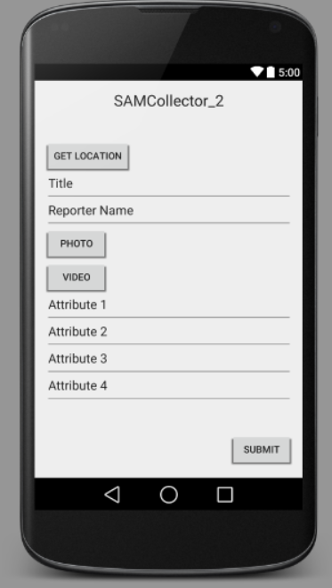

Social Action Mapper v0.03
Clinton Davis
15 December 2014
This project is still in progress, but upon completion, it will consists of three parts:
- A webviewer with dynamic controls for selecting by attributes
- A webeditor for creating and editing existing layers
- An Android collection app for producing layers (via geoJson files)
Current Status
Currently, the web interface displays geoJson files a custom leaflet map. Images and videos are embedded from external sources. The geoJson files currently are either included directly in the website file or are loaded from a separate geoJson stored locally on the site (this is only available for one layer, all others must be hard coded). All formatting is hardcoded into the map, but is changeable at the code level.
Near Future updates to the web interface will include:
- better storage and access methods for geoJson files (need to be able to store all files remotely and access individually)
- online form-based layer creation and editing
- online map-based layer creation and editing
- the ability for users in the viewer interface to selectively show and format layers by attributes
Longer term web updates might include:
- full integration with Android app
- user account management
- interface level exporting of layers to geoJson and kml
- on video location visualization (based on starting location, path, and intermediate time/location values)
Android Collection App
The Android collector is not yet functional. An initial build is in progress that will simply take in location, attributes, photos, and/or video and save as geoJson files. I haven't been able to get this app to work yet, but hope to continue work on it. The design plan will be as displayed below, with the producer able to set attribute fields and the user able to enter values into the text fields.
Planned Appearance of Collection App
